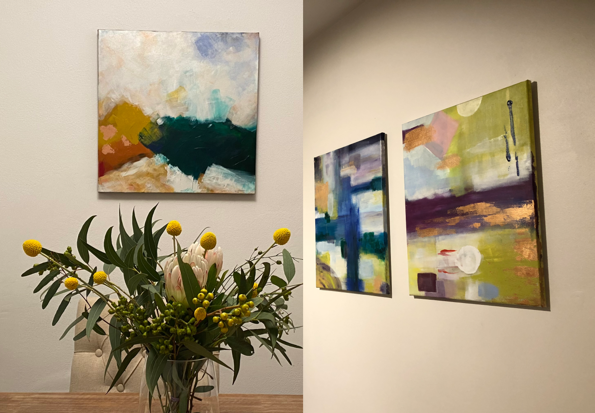
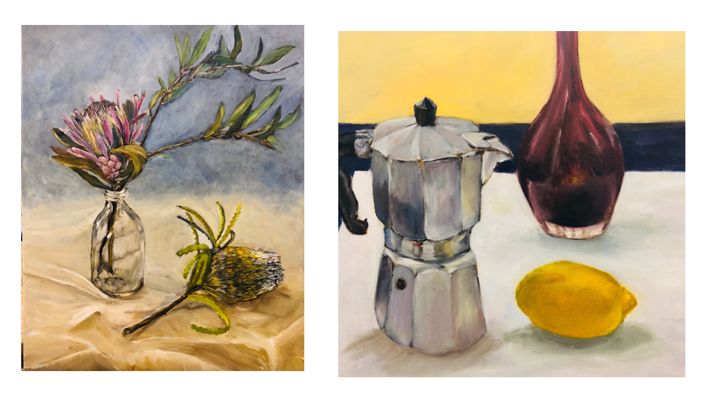
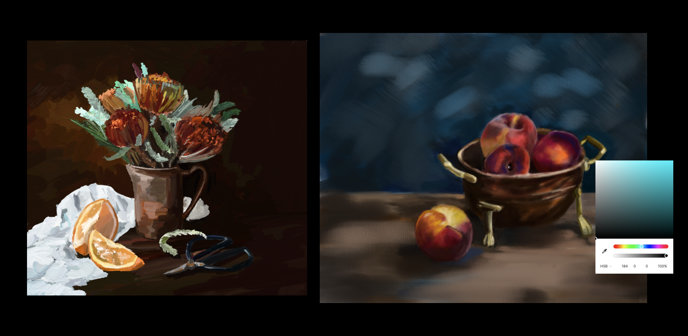
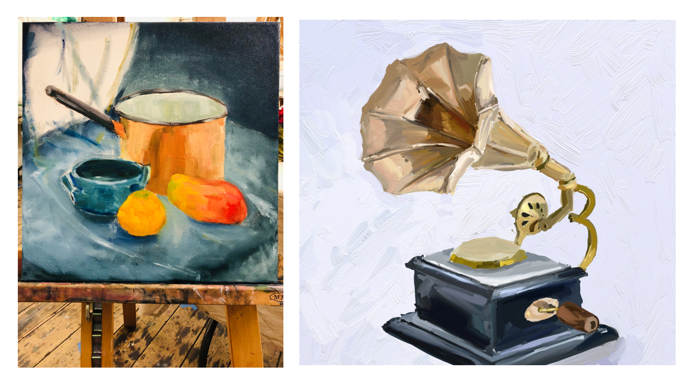

Finding my style in art
and how it makes me a better product designer
01.-
Context
Earlier this year, I was asked to share my paintings in one of the design jams, where all the designers get together and chat about all things design. At first, I didn’t think there was anything special about my paintings, as I was still finding my style and trying different mediums. To my surprise, as I went through my work, I began to remember the stories during each phase and how each of them has helped me to become a better product designer.
02.-
Background story
Growing up, I always enjoyed art classes and had a collection of art supplies. I was fortunate to be able to follow my passion and went to a design school to study industrial design. The course was fun but challenging. We were taught to follow a particular style to draw products. I spent a lot of time practising and it somehow became a chore. Every week I was nervous that my sketches would get markdown if the lines were not good enough. Painting no longer was a hobby anymore.
03.-
Re-learned everything about colour

Fast forward to 2017 when I moved into my new apartment, I began to do some abstract paintings to decorate the house. Painting in abstract was relaxing. I didn’t know what the end picture would look like when I started. All I wanted was something cohesive to the colour scheme with the rest of the furniture in the house. I wanted to get back to painting so I went to classes to learn about oil painting. It gave me a good understanding of warm and cool colours and composition.

I also got an iPad and continued to do still life paintings with oil painting texture. Painting on iPad was much faster, but mixing colours in digital was different from doing it in real life. It gave me a deeper understanding of the HSR colour system. I learned to adjust saturation, hue, and ratio, rather just randomly picked colours from the grid. Around the same time at work, I was working on dark mode. I realised I was able to adjust the current palette for dark mode colours because I’m more familiar with how the HSR system works.

04.-
Sharpie vs Figma
I continued to paint in both digital and on canvas. As much as I enjoyed the convenience of painting on an iPad, there’s something about the brush stroke and the layered paints that can’t be replaced. I also felt I was about to think better while painting with a real brush. I began to see a pattern in my workflow that I would draft in sketchpad before transferring to digital painting.

It was a light-bulb moment for me when I realised the same thing also applied to my job as a designer- the importance of drawing up user flow and lo-fi prototypes before jumping straight to Figma. Even though it’s quick and easy to jump straight to UI when we have a new idea, drawing it out on paper allows us to think it through.